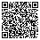

Doneren
Steunt u ook ons werk in Kenia? Elke gift, klein of groot, eenmalig of periodiek, komt rechtstreeks terecht bij de projecten. Bestuur en vrijwilligers werken onbetaald.
Overmaken
U kunt doneren door uw gift over te maken naar:
NL23 RABO 0385 3969 37
t.n.v. St. Matumaini kwa Turkana
BIC: RABONL2U
Wilt u een specifiek project steunen? Vermeld dan bijvoorbeeld „naaiatelier”, „studenten” of „gezinnen” bij uw overschrijving.
Scan met uw bank-app

Scan deze code met de app van uw bank (o.a. ING, Rabobank, ABN AMRO, SNS, ASN). De ontvanger staat vooringevuld; u kiest zelf het bedrag.
Uw gift is aftrekbaar
Stichting Matumaini heeft de ANBI-status. Uw gift is daarmee aftrekbaar van uw inkomstenbelasting. Voor een periodieke gift (minimaal vijf jaar een vast bedrag) geldt geen drempel; hiervoor is een schriftelijke overeenkomst nodig. Neem daarvoor contact met ons op, dan sturen we u het formulier.
Laat het ons weten
We vinden het leuk een berichtje van u te ontvangen als u een donatie heeft gedaan. Heeft u een vraag over een donatie of over een van onze projecten? Mail naar info@matumaini.nl. We proberen uw vraag zo snel en goed mogelijk te beantwoorden.
Wilt u graag telefonisch contact? Omdat we een kleine stichting zijn, hebben wij geen telefoonnummer. Stuur uw telefoonnummer naar ons e-mailadres, dan bellen we u zo snel mogelijk terug.
Andere manieren om te helpen
- Sponsor een tienerstudent: voor ongeveer € 1.000 tot € 1.200 gaat een tiener uit een arm gezin vier jaar naar de middelbare school. Lees meer of mail naar info@matumaini.nl.
- Wijnproeverij: kom naar een van onze wijnproeverijen, of laat ons er een verzorgen bij u thuis als er iets te vieren valt. De opbrengst is voor Matumaini. Stuur een berichtje naar info@matumaini.nl voor een uitnodiging.
- Oud ijzer: wij halen op verzoek oud ijzer op bij particulieren en bedrijven in de Hoeksche Waard. De opbrengst gaat naar de stichting.
- Statiegeld: bent u ondernemer en heeft u regelmatig leeg fust? Wij halen het op en het statiegeld komt ten goede aan Matumaini. Mail naar info@matumaini.nl.
- Informatieavond: wij vertellen graag over ons werk bij u thuis, in uw kerk, studentenvereniging of businessclub.
- Legaat: u kunt de stichting opnemen in uw testament. Als ANBI betaalt de stichting geen erfbelasting.
Shukrani! Bedankt!